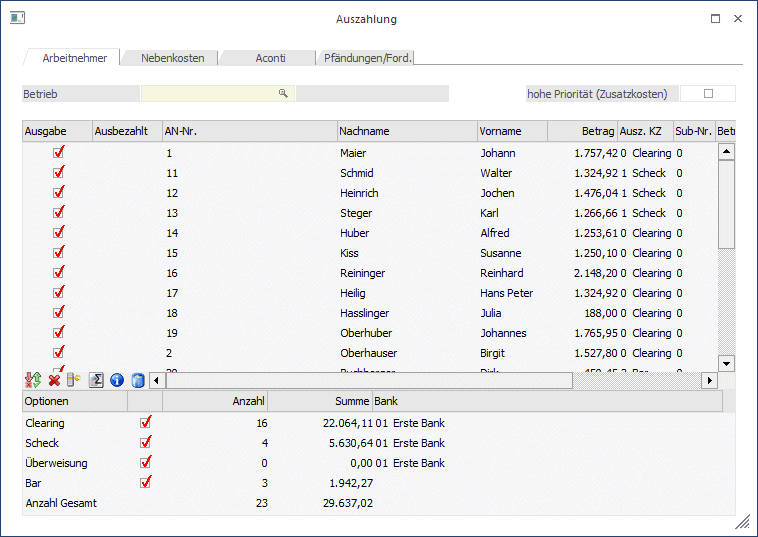
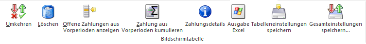

Im Register Arbeitnehmer können die Auszahlungen für AN durchgeführt werden, wobei die Voreinstellung aus dem AN-Stamm noch durch individuelle Änderungen übersteuert werden kann.

Im Feld
Ø Betrieb
kann auf eine Betriebsnummer eingeschränkt werden, wobei durch Drücken der F9-Taste nach allen angelegten Betrieben gesucht werden kann. Nach Bestätigung der Betriebsnummer werden nur mehr jene AN angezeigt, die unter der eingetragenen Betriebsnummer gespeichert wurden. Wurde keine Betriebsnummer ausgewählt, werden alle AN des Mandanten angezeigt.
Ø Hohe Priorität (Zusatzkosten)
Werden Lohn-/Gehaltsüberweisung aus der WinLine generiert, so werden diese automatisch in der SEPA-Datei im Kopfbereich mit 'SALA' gekennzeichnet, damit entspricht die Datei den Anforderungen einer Gehaltszahlung. Wird die Checkbox 'hohe Priorität' aktiviert, wird zusätzlich das Kennzeichen 'HIGH' in die SEPA-Datei geschrieben.
Durch das zusätzliche Kennzeichen 'HIGH' ist es möglich, dass alle Mitarbeiter, unabhängig davon bei welcher Bank die Mitarbeiter ihr Konto haben, das Geld am selben Tag erhalten.
Achtung:
Beim Aktivieren der Checkbox 'hohe Priorität' können von der Bank zusätzliche Kosten anfallen.
Hinweis:
In einer SEPA-Gehaltszahlungsdatei können nicht 'hohe Priorität' und 'Eilüberweisungen' gleichzeitig übergeben werden.
In der Tabelle sind folgende Informationen enthalten, wobei der Inhalt der Tabelle nach den Spalten AN-Nr., Nachname und Vorname sortiert werden kann:
Ø Ausgabe
Durch Aktivieren der Checkbox wird entschieden, ob eine Auszahlung vorgenommen werden soll oder nicht.
Ø Ausbezahlt
In diesem Feld wird das Datum der letzten Auszahlung angezeigt. Ist dieses Feld gefüllt, wird die Checkbox "Ausgabe" automatisch deaktiviert.
Ø AN-Nr.
Hier wird die AN-Nummer angezeigt.
Ø Name
Hier wird der Name des AN angezeigt.
Ø Betrag
In dieser Spalte wird der Netto-Auszahlungsbetrag lt. der aktuellen Abrechnung ausgewiesen.
Ø Ausz. KZ
In diesem Feld wird das Auszahlungs-Kennzeichen, das auch im AN-Stamm hinterlegt werden kann, vorgeschlagen. Das Kennzeichen kann aber in der Tabelle noch übersteuert werden.
Ø Sub-Nr.
Wurde ein AN mit SUB-AN angelegt und auch abgerechnet, wird hier die abgerechnete SUB-Nr angezeigt.
Ø Betrieb
Hier wird die Betriebsnummer, unter der der AN abgerechnet wurde, angezeigt.
Unterhalb der Tabelle kann über die verschiedenen Checkboxen gesteuert werden, welche Auszahlungen durchgeführt werden sollen. Dabei sind die Optionen
ü Clearing
ü Scheck
ü Überweisung
ü Bar
vorgesehen. Im Eingabefeld
Ø Bank
kann aus der Auswahllistbox die gewünschte Bank, von der die Auszahlung durchgeführt werden soll, ausgewählt werden. Diese Auswahl hat aber keine Auswirkung auf eine Buchung für die WinLine FIBU. Entsprechend dieser Einstellung werden auch die jeweiligen Daten verwendet (für die Übergabe ins Clearing oder für den Druck).
Darunter ist in den Rubriken "Anzahl" und "Summe" noch jeweils die Anzahl der Transaktionen pro Zahlungsart und die Summe er Auszahlung pro Zahlungsart ersichtlich.
Hinweis:
In der Tabelle werden nur positive Abrechnungsergebnisse angezeigt. Abrechnung, die einen Betrag 0 oder ein negatives Ergebnis haben, werden unterdrückt.
Achtung:
Bei der Ausgabe auf Clearing werden die Clearingdaten in den FIBU-Mandanten gestellt, der in den Betriebsdaten hinterlegt wurde. Sollten einmal nach der Auszahlung keine Clearingdaten vorhanden sein, so muss die Einstellung des FIBU-Mandanten in den Betriebsdaten überprüft werden.
Neben jeder Auszahlungsart wird die Anzahl der für diese Auszahlungsart aktivierten AN sowie der Gesamtbetrag ausgewiesen. Zusätzlich dazu wird noch die Gesamtsumme der Auszahlungsbeträge angezeigt (bezogen auf die in der Tabelle befindlichen AN).
Durch Drücken der F5-Taste wird die Ausgabe gestartet, wobei entsprechend der Einstellungen alle Optionen durchgeführt werden. Durch Drücken der ESC-Taste wird das Fenster wieder geschlossen.
Für die Optionen Clearing, Bar und Scheck bzw. Überweisung wird jeweils ein eigenes Ausgabeprotokoll gedruckt, wo die einzelnen AN, der Auszahlungsbetrag und die Summe der Auszahlungsbeträge angeführt werden.
Nach Durchführung der Auszahlung wird die Tabelle geleert und es kann ggf. ein neuerlicher Auszahlungslauf (z.B. für einen anderen Betrieb) durchgeführt werden.
Wie kann man eine Auszahlung wiederholen?
Es kann vorkommen, dass z.B. die Clearingdatei bei der Übertragung zerstört wurde oder das Scheckformular nicht richtig eingelegt wurde. Daraus ergibt sich die Notwendigkeit, die Auszahlung zu wiederholen.
Pro Abrechnung wird gemerkt, ob diese bereits ausgezahlt wurde oder nicht. Standardmäßig werden bei der Auszahlung nur jene Abrechnungen vorgeschlagen, die hier noch nicht bearbeitet wurden.
Die Abrechnungen werden trotzdem angezeigt - und zwar mit dem Datum, an dem die Auszahlung erfolgte. Durch Aktivieren der Checkbox
Ø Ausgabe
in der ersten Spalte der Tabelle kann die Auszahlung nochmals durchgeführt werden.
Tabellenbuttons

Ø Umkehren
Durch Anklicken des Umkehr-Buttons kann die Selektion in das Gegenteil gekehrt werden. Beispiel: Standardmäßig werden alle abgerechnete AN zur Auszahlung vorgeschlagen. Wenn nun nur eine Auszahlung durchgeführt werden soll, so müssten alle anderen AN deaktiviert werden. In diesem Fall wird aber nur der eine AN deaktiviert und durch Anklicken des Umkehr-Buttons ist dann nur mehr der eine AN aktiv - alle anderen wurden deaktiviert.
Ø Löschen
Durch Anklicken des Löschen-Buttons können die aktuell selektierten Auszahlungen gelöscht werden. Die Zahlungszeilen werden aus der Tabelle entfernt. Zahlungen werden erst nach einer erneuten Abrechnung wieder angezeigt.
Ø Offene Zahlungen aus Vorperiode anzeigen
Wird dieser Button gedrückt, werden Zahlungen aus Vorperioden angezeigt, die nicht über die Auszahlung ausbezahlt wurden. Diese Zahlungen werden in einer eigenen Zeile dargestellt.
Ø Zahlung aus Vorperiode kumulieren
Wird dieser Button gedrückt werden Zahlungen aus Vorperioden angezeigt, die nicht über die Auszahlung ausbezahlt wurden. Allerdings werden diese dann in einer Zeile mit der aktuellen Auszahlungszeile kumuliert.
Ø Zahlungsdetails
Zeigt in einem eigenen Fenster an, aus welchen Zahlungen sich der vorgeschlagene Auszahlungsbetrag zusammensetzt. Wurden zum Beispiel Teilabrechnungen erfasst, so sieht man unter den Zahlungsdetails, von welcher Teilabrechnung welcher Auszahlungsbetrag stammt.
Ø Ausgabe Excel
Durch Anwahl des Buttons "Ausgabe Excel" wird der Inhalt der Tabelle nach Microsoft Excel übergeben.
Ø Tabelleneinstellungen speichern
Die Spalten einer Tabelle können grundsätzlich an beliebige Positionen verschoben, bzw. in der Breite entsprechend angepasst werden. Durch Anwahl des Buttons "Tabelleneinstellungen speichern" werden die Einstellungen benutzerspezifisch gespeichert und bei dem nächsten Aufruf des Programmpunktes wieder vorgeschlagen.
Ø Gesamteinstellungen speichern
Im Gegensatz zu "Tabelleneinstellungen speichern" können mit "Gesamteinstellungen speichern" mehrere Tabellenaufbauten gespeichert und nach Wunsch geladen werden. Zusätzlich werden Sonderfunktionen der Tabelle (z.B. "Spalte gruppieren") ebenfalls bei der Speicherung bedacht.
Buttons

Ø Ok
Mit Hilfe des "OK" Buttons oder der Taste F5 wird die Auszahlung durchgeführt
Ø Ende
Mit Hilfe des "Ende" Buttons oder der Taste ESC wird das Fenster geschlossen